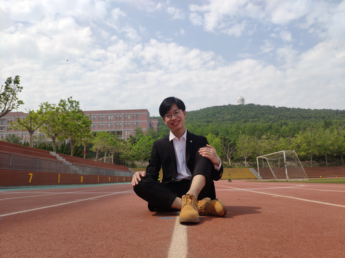
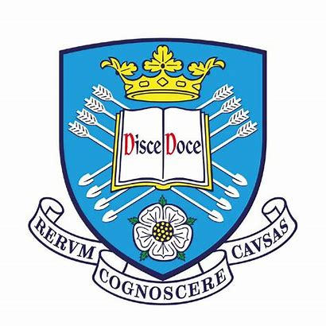
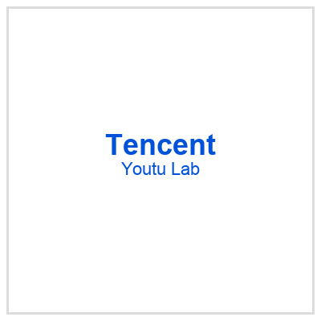
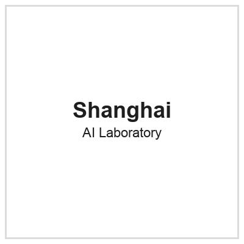

Hong Kong University of Science and Technology (HKUST)
Supervisor: Prof. Song Guo (IEEE Fellow, Chair Professor)
Topic: Multi-modal AI, Post-Training, and AI for Weather
> identity.profile
PhD Candidate · Computer Science · Multi-modal AI
I am a PhD candidate at the Hong Kong University of Science and Technology (HKUST), supervised by Prof. Song Guo (IEEE Fellow, Chair Professor). I previously obtained my M.S. from Zhejiang University and B.S. from Shandong University. I am also affiliated with the Jindouyun (筋斗云) Program at ByteDance and Project Up (青云计划) at Youtu, Tencent.

My research focuses on Post-Training, On-Policy Distillation (OPD), Vision-Language Models, Mixture-of-Experts, Computer Vision, and AI for Weather. I serve as a reviewer for top journals and conferences such as TIP, TCSVT, ACM MM, and IJCAI.
Supervisor: Prof. Song Guo (IEEE Fellow, Chair Professor)
Topic: Multi-modal AI, Post-Training, and AI for Weather
Supervisor: Prof. Zhe-Ming Lu (IEEE Senior Member, Head of Department)
Topic: Computer Vision and Artificial Intelligence
Rank: 2/21 · GPA: 89.7/100
Advisor: Prof. Zhongfei Zhang (IEEE Fellow)
Topic: Few-Shot Segmentation

Advisor: Prof. Jungong Han (IAPR, AAIA Fellow)
Topic: Semantic Segmentation

Topic: Post-Training and On-Policy Distillation (Youtu-MM-Wiki)
Topic: Vision-Language Models and Post-Training

Topic: Mixture-of-Experts and AI for Weather
Topic: Weather Forecasting (SKNO)
Topic: Self-Supervised Visual Representation
Topic: Self-Supervised Learning
Built variable-adaptive dense MoE and sparse MoE acceleration for multi-variable weather forecasting at Shanghai AI Laboratory (+11.3% accuracy / −42% latency). Outcomes: VA-MoE, STCast, EMFormer. Earlier open-sourced SKNO at Huawei for global ERA5 forecasting.
Developing VLM post-training pipelines at ByteDance (Jindouyun) and Tencent Youtu (Project Up), covering SFT, instruction tuning, and on-policy distillation for risk control and multi-turn reasoning. Previously led long-text SFT at iFlytek with a divide-and-conquer summarization pipeline.
MCINet reaches SOTA on 8 PASCAL/COCO benchmarks by fusing a learnable branch with a frozen backbone (ACM TOMM). Lightweight DAM / PMNet (0.68M params) handle cross-class / cross-dataset / cross-domain settings (WACV 2024, Neurocomputing).
SPPEL derives perceptual prompts from the input itself for dense prediction, without external prompt tokens (IEEE TCSVT).
Awarded the National Encouragement Scholarship for three consecutive years at Shandong University.
浙江大学毕业生奖学金（硕士+博士共1人）
NOTE: This is a personal webpage. Views expressed here are solely those of the author and do not represent HKUST, ZJU, ByteDance, Tencent, or other affiliated organizations.